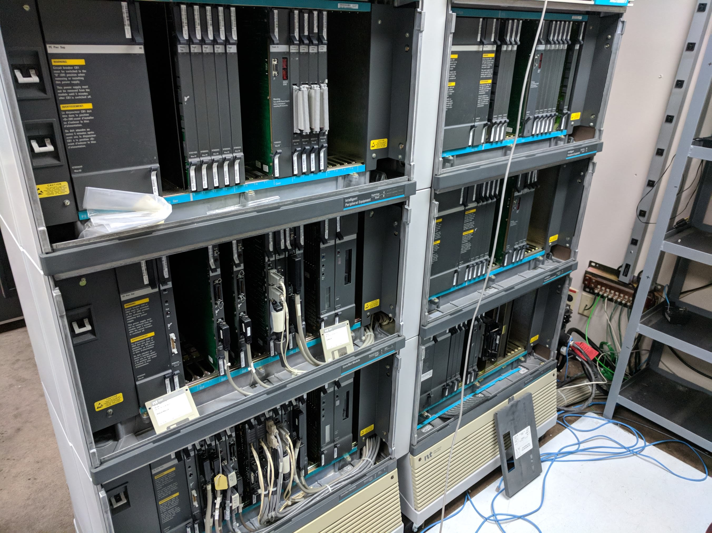
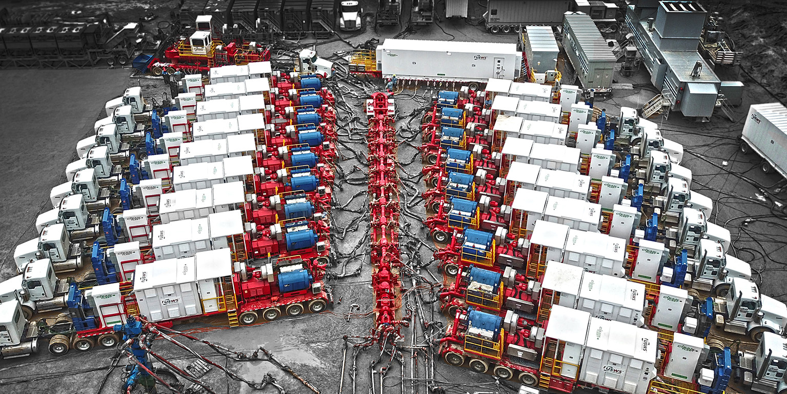
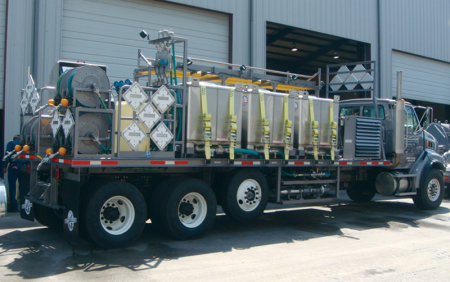

Goals for LaunchCode and Resume
With Launchcode, I hope to gain a better understanding of Java and HTML as well as new skillsets
like JavaScript and CSS. When I make it to LaunchPad I want to learn how to better sell and present myself in resume writing and interview
skills. I believe my experience in supporting proprietary hardware and software will give me a valuable insight as a developer
into how the user will think and act. Thank you again for this oppurtunity.
Kevin Buss
"Support Specialist with a history of adaptability and versatility as well as strong client management and communication"
Areas of Expertise
Testing & troubleshooting | Customer service | Problem management | Incident response
Adapting to new technologies | Breaking down technical concepts | Mentoring co-workers
Technical Proficiencies:
Platforms Windows XP/7/8/10/Server 2002/2008/2012, Linux, Oracle 9/10/11
Software Microsoft Office (Word, Excel, Outlook, PowerPoint), SQL, Salesforce
Technical Support Engineer
Aclara 02/2016 – 04/2019
Expert in information gathering, troubleshooting, diagnosing, and fixing client software and hardware
issues, including server, Oracle, SQL, and electrical support as well as troubleshooting implementations
and 3rd party integrations. Case management via a Salesforce ticketing system. Manage client communication
via phone, email, and remote access, as well as maintaining highest response times in my department.
Assist in the training and mentoring of employees. Collaborating with colleagues to find innovative
solutions to unique problems. Owning technical escalations as needed. Familiar with working in Agile and
Scrum environments. Responsible for system monitoring 25 premium clients on a weekly basis to provide
preventative support. Learning new software and technologies as needed to better provide for clients’ needs.
Engineer

Callisto Communications LLC 01/2012 – 07/2013
Assistant to the Senior Engineer. Tested equipment thoroughly when it arrived for stock and before it was
shipped to a client, programmed and installed test beds for new equipment, troubleshooting any hardware/software
issues related to Nortel and Cisco PBX systems, and working with techs identifying potential onboard component
failures to repair product. On call assistance to field techs for troubleshooting system installations.
Electronic Technician

Nabor’s Industries 07/2011 – 01/2012
Electrician in the oilfield. Responsibilities included repairing all heavy equipment, trucks, computer systems,
and any electrical components vital to operations as well as maintaining them with a strong regular PM routine.
Installing any projects for new systems with equipment as well as updating older trucks.
Traveled frequently out of state to assist other fleets, update older equipment, and train new personnel at times.
Chemical Technician

Nabor’s Industries 07/2011 – 01/2012
Monitored chemical measurements and verified accuracy to technical specifications. Ensured safety regulations
were followed by my team as well as other employees both in everyday operations as well as cleanup. Responsible
for highly corrosive and flammable materials, troubleshooting and maintaining heavy field equipment.
Educational Experience
LaunchCode from 2019 - Present
Vatterott College from 2004 – 2008 gaining a Bachelor’s in computer science with a 3.5 GPA